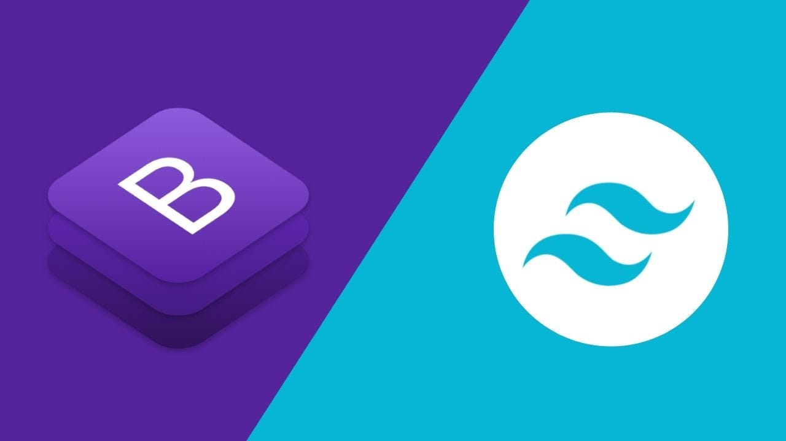

CSS Frameworks (Bootstrap y Tailwind)
Frameworks CSS Modernos
Bootstrap es un framework de CSS que proporciona componentes de diseño predefinidos para crear sitios web responsivos rápidamente. Incluye un sistema de grid, componentes de interfaz de usuario, y utilidades para tipografía y diseño.
Tailwind CSS es un framework de utilidades que permite construir diseños personalizados directamente en el HTML. Proporciona clases de utilidad para aplicar estilos sin tener que escribir CSS personalizado.
Ambos frameworks facilitan la creación de diseños consistentes y responsivos, pero con enfoques diferentes.
Ejemplo con Tailwind CSS
Sitio web usando Tailwind con diseño limpio y elementos reutilizables:
<div class="container mx-auto px-4">
<button class="bg-blue-500 hover:bg-blue-700 text-white font-bold py-2 px-4 rounded transition-colors duration-300">
Botón Interactivo
</button>
<div class="grid grid-cols-1 md:grid-cols-3 gap-6 mt-8">
<div class="bg-white rounded-lg shadow-lg p-6">
<h3 class="text-xl font-semibold mb-4">Card 1</h3>
<p class="text-gray-600">Contenido de la tarjeta</p>
</div>
</div>
</div>Comparación de Frameworks
Bootstrap
- Componentes prediseñados
- Sistema de grid robusto
- JavaScript integrado
- Ideal para prototipado rápido
Tailwind CSS
- Clases de utilidad
- Altamente personalizable
- Diseños únicos
- Mejor control granular
Tecnologías Implementadas
- Bootstrap 5: Grid system, componentes, utilidades
- Tailwind CSS: Utility-first approach, customización
- Responsive Design: Mobile-first development
- Component Libraries: Reutilización de elementos
Reflexión Personal
Aprendí a usar herramientas modernas para acelerar el desarrollo y mantener consistencia visual. Tailwind me permitió crear diseños personalizados rápidamente, mientras que Bootstrap me enseñó la importancia de los sistemas de diseño.
La experiencia con ambos frameworks me dio una perspectiva amplia sobre diferentes enfoques para el desarrollo frontend eficiente.